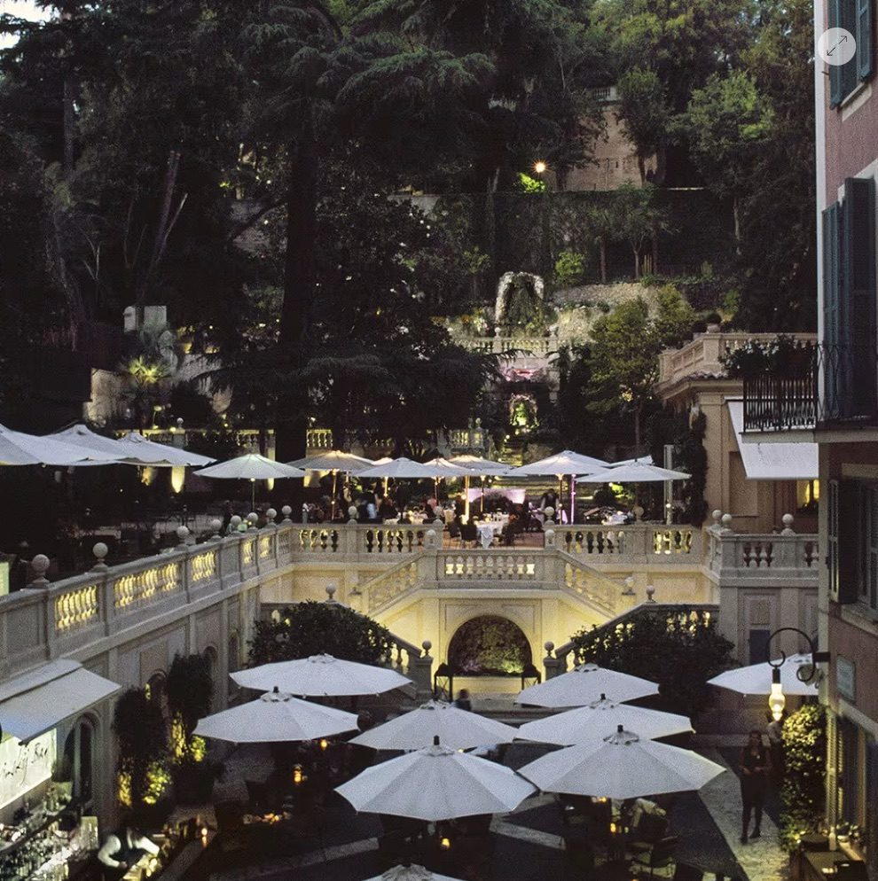

My top overall pick in Rome — a hidden garden between Piazza del Popolo and the Spanish Steps, understated and elegant.
Of the three Rome hotels I feature, only one carries the label "my top overall pick" — and it's the de Russie. My one-liner for it: a hidden garden between Piazza del Popolo and the Spanish Steps, understated and elegant.
The secret garden is the whole magic. Terraced up the Pincio hill behind the hotel, it delivers something no other address in the centro storico can — birdsong and greenery in the exact center of Rome, with the Popolo obelisk one door away and the Spanish Steps a short stroll.
Understated is the operative word. The de Russie doesn't do Belle Époque spectacle or nightly rituals — it does quiet, confident elegance, which is exactly why it's the hotel I recommend first when someone simply asks, "Where should I stay in Rome?"

The hidden garden. Terraced into the Pincio hill — the calmest square meters in central Rome, and the reason this is my top pick.
The location. Between Piazza del Popolo and the Spanish Steps — the golden triangle of Rome on foot.
The understatement. Elegant without performing — for travelers who find grandeur tiring, this is the antidote.
If you want spectacle, look next door on my list. The St. Regis does Belle Époque grandeur and a nightly champagne sabrage — a completely different Rome.
Garden-side rooms are the request. Views over the terraces rather than the street — I ask for them on every booking.
Romantic couples, compare the Eden. The Hotel Eden is my quieter, old-world-charm alternative — my featured page frames all three.
A hidden garden in the exact center of Rome — my top overall pick in the city, and the easiest recommendation I make.
Rates through me are identical to booking direct — the perks are not. As a Fora advisor, my clients receive a space-available upgrade, daily breakfast, and a hotel credit — plus my direct line to the team on property before and during your stay.
Check Availability